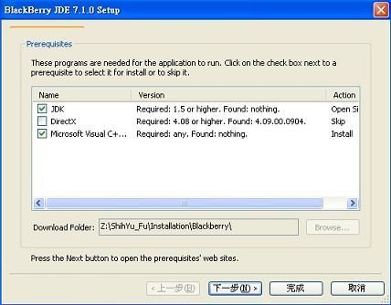

Steward
分享是一種喜悅、更是一種幸福
手機 - Blackberry Curve9320 - Java - 開發環境
開始安裝Blackberry JDK之前，需要先安裝http://www.oracle.com/technetwork/java/javase/downloads/jdk-7u4-downloads-1591156.html，每個Blackberry JDK都有對應需要安裝的Java JDK版本
| Blackberry JDK 版本 | Java SDK 需求版本 |
|---|---|
| BlackBerry JDE v4.5+ | Java SE JDK v6.0, update 14 or later |
| BlackBerry JDE v4.2.1 and v4.3.0 | Java SE JDK v5.0 or v6.0 |
| BlackBerry JDE v4.1 and v4.2 | Java SE JDK v5.0 |
| BlackBerry JDE v4.0 and v4.0.2 | Java SE SDK v1.4 |
接著下載RIM提供的http://swdownloads.blackberry.com/Downloads/contactFormPreload.do?code=00EC53C4682D36F5C4359F4AE7BD7BA1&dl=FF6622A42D684A5F18B53B8D94C9BE98&check1=A，在開始下載之前，RIM會提示安裝Akamai Netsession Interface Manager工具，此工具提供下載管理，避免斷線時檔案需要重新下載，安裝完Manager工具之後，點選網頁原本的Download就可以開始下載Blackberry JDK。
下載後，執行BlackBerry_JDE_7.1.0.exe進行安裝，安裝程式會檢查電腦是否已經安裝Java JDK，如果沒有，則會出現如下的提示安裝畫面

司徒在Windows 7(x64)安裝最新版的Java JDK 7 update 6(x64)時，發現Blackberry JDK會無法找到Java JDK的安裝，所以，請記得安裝Java JDK 7 update 6(x86)版本，不然會出現Cannot find RIMIDEWin32Util.dll的錯誤訊息